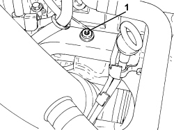
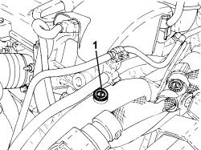
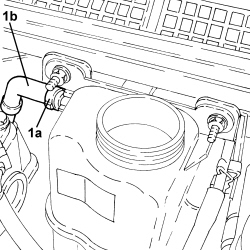
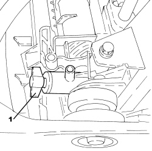
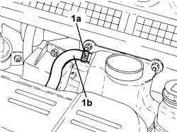

0010T20 ENGINE COOLANT - CHANGE
- Path
- Procedures > 00 MAINTENANCE > 0010 NEW VEHICLES AND MAINTENANCE > 0010T VEHICLE FLUIDS > 0010T20 ENGINE COOLANT - CHANGE
- Kind
- repair procedure (removal / refitting; the operation number is the code)
- Applies to
- engines: 1.9 JTS, 2.2 JTS, 3.2 JTS, 1.9 JTD 8V, 1.9 JTD 16V, 2.4 JTD 20V; all production periods
- Interactive page
- https://sloeber94.github.io/elrnDB/alfa/159/en/#/939010369
Applies to: engines: 1.9 JTD 8V, 1.9 JTD 16V; all production periods
Procedure for draining the circuit.
- With the engine cold, undo the engine coolant reservoir cap.
Op. 7055B54 UNDER ENGINE PROTECTION/GUARD - R.R.
1. Open the radiator coolant drainage tap.

Applies to: engines: 1.9 JTD 8V, 1.9 JTD 16V; all production periods
Procedure for refilling the circuit.
- Close the tap on the radiator used for draining the circuit.
1. Open the bleed screw on the water pump rigid inlet pipe.

Applies to: engines: 1.9 JTD 8V, 1.9 JTD 16V; all production periods
1. Slowly introduce the recommended fluid into the circuit via the filler on the engine coolant supply reservoir keeping the level above the MAX reference until fluid comes out of the bleed, then close the bleed screw.
Component | Type | Description | Classification | Qty. | Validity |
|---|---|---|---|---|---|
ENGINE COOLING CIRCUIT | Fluid [I] | Mixture of 50% PARAFLU UP/water | CUNA NC 956-16 - ASTM D 3306 | 7.5 | 1.9 JTD 8V 1.9 JTD 16V |

Applies to: engines: 1.9 JTD 8V, 1.9 JTD 16V; all production periods
- Complete the introduction of the engine coolant until the MAX reference is reached on the reservoir.
- Start the engine keeping it idling for about 2 minutes and, at the same time, top up, if necessary to the MAX level.
- Fit the engine coolant reservoir cap and tighten.
- Then carry out gradual, periodic acelerations (about every 30 secs.) until the engine speed is 3000 rpm. Repeat this operation until the fan cuts in for about three times.
If there is a noticeable drop in the level in the tank below the MIN reference during this stage, let the engine idle and open the cap very carefully, topping up the fluid to the MAX level, then close the cap fully and remove all the air from the system.
- Stop the engine.
- After the above operations and with the engine cold, check the fluid level in the engine coolant reservoir and top up to the MAX notch on the reservoir if necessary.
- At the end of the above operations, make sure that the amount of fluid introduced into the system is at least equal to the amount collected during the draining stage.
Applies to: engines: 1.9 JTS, 2.2 JTS; all production periods
Procedure for draining the circuit
- With the engine cold, undo the engine coolant reservoir cap.
Op. 7055B54 UNDER ENGINE PROTECTION/GUARD - R.R.
1. Open the radiator coolant drainage tap.

Applies to: engines: 1.9 JTS, 2.2 JTS; all production periods
Procedure for refilling the circuit
- Close the tap on the radiator used for draining the circuit.
1. Open the bleed screw on the pipe from the engine to the radiator completely.

Applies to: engines: 1.9 JTS, 2.2 JTS; all production periods
1. Open the bleed screw on the pipe from the radiator to the engine completely.
2. Open the bleed screw on the pipe from the heater to the water-oil heat exchanger completely.

Applies to: engines: 1.9 JTS, 2.2 JTS; all production periods
1. Slowly introduce the recommended fluid into the circuit via the filler on the engine coolant supply reservoir keeping the level above the MAX reference until fluid comes out of the bleed, then close the bleed screw.
Component | Type | Description | Classification | Qty. | Validity |
|---|---|---|---|---|---|
ENGINE COOLING CIRCUIT | Fluid [I] | Mixture of 50% PARAFLU UP/water | CUNA NC 956-16 - ASTM D 3306 | 8.15 | 1.9 JTS 2.2 JTS |

Applies to: engines: 1.9 JTS, 2.2 JTS; all production periods
1. Continue introducing fluid until it comes of the bleed, then close the bleed screw.

Applies to: engines: 1.9 JTS, 2.2 JTS; all production periods
1. Let the fluid level in the reservoir settle down, then close the bleed screw even if only air and not fluid is coming out.

Applies to: engines: 1.9 JTS, 2.2 JTS; all production periods
- Fit the engine coolant reservoir cap and tighten.
- Start up the engine and let it idle for about 2 minutes.
- Then carry out gradual, periodic (every 30 secs.) acceleration until the engine speed is around 3/4 of maximum power rpm. Repeat this operation until the fan cuts in for about three times.
- Stop the engine.
- After the above operations and with the engine cold, check the engine coolant level in the reservoir and top up to the MAX reference on the reservoir if necessary.
- At the end of the above operations, make sure that the amount of fluid introduced into the system is at least equal to the amount collected during the draining stage.
Applies to: engines: 3.2 JTS; all production periods
Procedure for draining the circuit.
- With the engine cold, undo the engine coolant reservoir cap.
Op. 7055B54 UNDER ENGINE PROTECTION/GUARD - R.R.
1. Open the radiator coolant drainage tap.

Applies to: engines: 3.2 JTS; all production periods
Procedure for refilling the circuit
- Close the tap on the radiator used for draining the circuit.
1. Open the bleed valve on the top left part of the radiator.

Applies to: engines: 3.2 JTS; all production periods
1. Loosen the band (1a) and disconnect the degassing pipe (1b).

Applies to: engines: 3.2 JTS; all production periods
- After having reconnected the degassing pipe, engine side, introduce the recommended fluid to above the MAX reference until fluid comes out of the bleed on the radiator and then close the bleed screw.
Component | Type | Description | Classification | Qty. | Validity |
|---|---|---|---|---|---|
ENGINE COOLING CIRCUIT | Fluid [I] | Mixture of 50% PARAFLU UP/water | CUNA NC 956-16 - ASTM D 3306 | 10.3 | 3.2 JTS |
Applies to: engines: 3.2 JTS; all production periods
- Continue introducing fluid until it comes out of the degassing pipe, then reconnect it to the reservoir and tighten the band.
- Leave the engine coolant level in the reservoir to settle down for a few minutes.
- Fit the engine coolant reservoir cap and tighten.
- Start up the engine and let it idle for about 3 minutes.
- Then carry out gradual, periodic (every 30 secs.) acceleration until the engine speed is around 3/4 of maximum power rpm. Repeat this operation until the fan cuts in for about three times.
1. Open the bleed screw letting the air that has accumulated at the top to escape.
- Close the bleed screw as soon as fluid comes out.

Applies to: engines: 3.2 JTS; all production periods
- Stop the engine.
- After the above operations and with the engine cold, check the engine coolant level in the reservoir and top up to the MAX reference on the reservoir if necessary.
- At the end of the above operations, make sure that the amount of fluid introduced into the system is at least equal to the amount collected during the draining stage.
Applies to: engines: 2.4 JTD 20V; all production periods
Procedure for draining the circuit.
- With the engine cold, undo the engine coolant reservoir cap.
Op. 7055B54 UNDER ENGINE PROTECTION/GUARD - R.R.
1. Open the radiator coolant drainage tap.

Applies to: engines: 2.4 JTD 20V; all production periods
Procedure for refilling the circuit.
- Close the tap on the radiator used for draining the circuit.
1. Open the bleed valve on the return pipe from the radiator.

Applies to: engines: 2.4 JTD 20V; all production periods
1. Open the bleed valve on the top left part of the radiator.

Applies to: engines: 2.4 JTD 20V; all production periods
1. Open the bleed valve on the rigid return pipe to the water pump.

Applies to: engines: 2.4 JTD 20V; all production periods
- Slowly introduce the recommended fluid into the circuit via the filler on the engine coolant supply reservoir keeping the level above the MAX reference until fluid comes out of the bleeds opened previously, then close the bleed screws.
Component | Type | Description | Classification | Qty. | Validity |
|---|---|---|---|---|---|
ENGINE COOLING CIRCUIT | Fluid [I] | Mixture of 50% PARAFLU UP/water | CUNA NC 956-16 - ASTM D 3306 | 7.35 | 2.4 JTD 20V |
- Complete the introduction of engine coolant until the MAX reference on the reservoir is reached.
1. Loosen the band (1a), disconnect the degassign pipe (1b) and introduce it directly into the engine coolant reservoir filler.

Applies to: engines: 2.4 JTD 20V; all production periods
- Start up the engine and let it idle for about 2 minutes.
- Later on, accelerate and make sure that the water is circulating in the circuit; this can be ascertained by the presence of a jet of water coming from the degassing pipe submerged in the reservoir.
- If the water is not circulating, repeat the bleeding operations using the dedicated screws described previously.
- At the same time top up the fluid, if necessary, to the MAX reference.
- Restore the connection for the degassing pipe on the reservoir and tighten the band.
- Fit the engine coolant reservoir cap and tighten.
- Then accelerate gradually and periodically (about every 30 seconds) until a speed of 3500 rpm is reached. Repeat this operation until the fan cuts in for about three times.
- If the level in the reservoir drops considerably during this stage, restore the engine idle speed and open the filler cap very carefully and top up to the MAX level; then close the cap completely and finish the bleeding of the air from the engine cooling system.
- Stop the engine for around 1 minute and wait for any air bubbles from the thermostat to rise towards the engine coolant reservoir.
- Start the engine again and carry out another cycle of accelerations and fan engagements.
- Stop the engine and wait for a sufficient drop in the engine coolant temperature.
- After the above operations, check the fluid level in the reservoir and top up to the MAX notch on the reservoir if necessary.
- At the end of the above operations, make sure that the amount of fluid introduced into the system is at least equal to the amount collected during the draining stage.
Topics linked from this page (1)
Topics that link to this page (30)
- S01 ENGINE KNOCK
- 1004B10 POWER UNIT WITH MANUAL GEARBOX - R.R
- 1016C10 SINGLE CYLINDER HEAD - R.R. AND REPLACE GASKET
- 1036L10 CAMSHAFTS IN CAMSHAFT HOUSING - R.R. - INCLUDES CAMSHAFT HOUSING REPLACEMENT IF NECESSARY
- 1072B10 INLET MANIFOLD - R + R AND REPLACE SEAL
- 1072C44 EXHAUST MANIFOLD HEAT SHIELD - R+R
- 1080C80 EXHAUST GAS/WATER HEAT EXCHANGER FOR EGR SYSTEM - R.R
- 1080C83 EXHAUST GAS INLET PIPING FROM EXHAUST MANIFOLD TO HEAT EXCHANGER EGR - R R
- 1084B36 ENGINE OIL FILTER MOUNTING AND HEAT EXCHANGER - R.R
- 1084B40 ENGINE OIL DELIVERY PIPE TO TURBOCHARGER - R + R
- 1084B42 ENGINE OIL RETURN PIPE FROM TURBO - R + R
- 1084C10 ENGINE OIL HEAT EXCHANGER - R + R
- 1084C15 ENGINE OIL HEAT EXCHANGE MOUNT R R
- 1088B10 ENGINE COOLANT SUPPLY RESERVOIR - R.R.
- 1088B20 ENGINE COOLING RADIATOR - R + R
- 1088C10 WATER PUMP - R + R
- 1088C30 THERMOSTAT UNIT - R+R
- 1088C40 THERMOSTAT- R + R
- 1088D06 THREE-WAY CONNECTOR BETWEEN RADIATOR AND THERMOSTAT
- 1088D10 LOWER RADIATOR COOLANT OUTLET HOSE - R.R.
- 1088D14 UPPER RADIATOR COOLANT OUTLET HOSE - R.R.
- 1088D24 WATER PUMP RIGID COOLANT INLET PIPE - R.R.
- 1088D47 COOLANT SUPPLY AND RETURN HOSES TO ENGINE OIL HEAT EXCHANGER - R.R.
- 1088D51 COOLANT SUPPLY PIPE FROM CRANKCASE TO OIL/WATER HEAT EXCHANGER - R.R. WITH REAR ENGINE SUPPORT REMOVED
- 1088D56 ENGINE OIL HEAT EXCHANGER DELIVERY AND RETURN DUPLEX RIGID PIPING - R R
- 1088D55 COOLANT SUPPLY PIPE TO ENGINE OIL HEAT EXCHANGER - R.R.
- 1088D67 COOLANT PIPE BETWEEN COOLANT RESERVOIR AND THERMOSTAT - R.R.
- 1088E10 RADIATOR COOLING FAN - R + R
- 2110C50 GEAR SELECTION AND ENGAGEMENT UNIT - R R
- 4130B20 POWER STEERING PUMP - R.R.